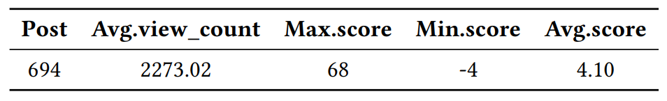

Introdution
This website reports all the data details related to our paper: Exploring and Analyzing Software Architecture Refactoring in
Practice
Menu
Research Question: shows the data results related to the four research questions in our paper.
Dataset: presents data collected from Stack Overflow for empirical study on analyzing software architecture refactoring in practice.
Overall research process
Data collection process
Statistics of the posts
